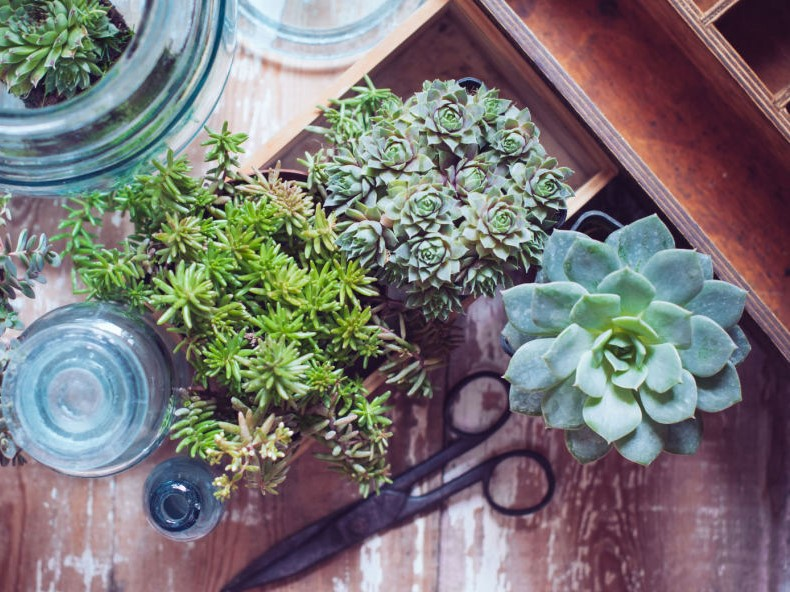
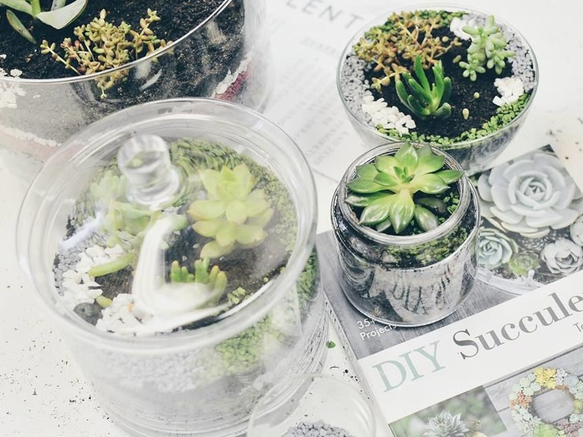
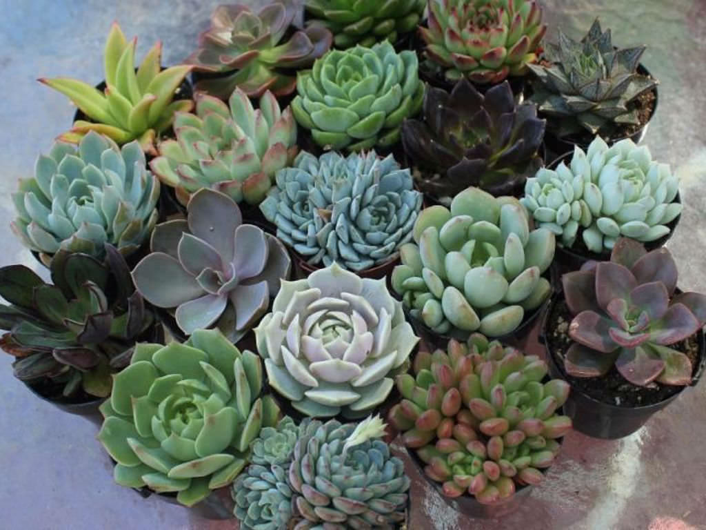
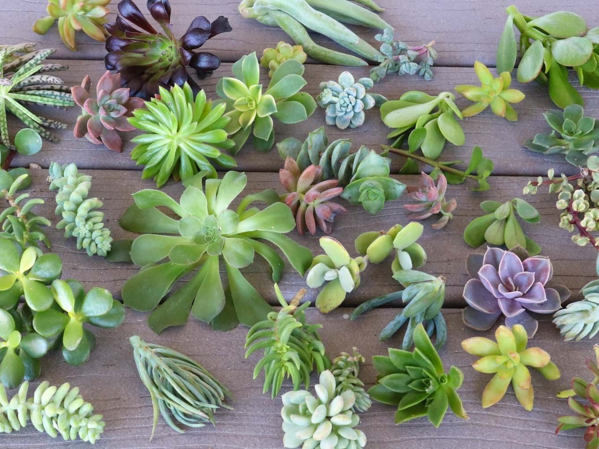

Sukulentai – naujasis namų, aplinkos ir interjero „trendas“, kuris jau gana ilgą laiką karaliauja jaukumo viršūnėse. Išties sunku atsispirti įvairiausių spalvų, dydžių ir tobulų formų augalams, kurie hipnotizuoja it mandalos.
Mano nuomone, sukulentai pasaulį užkariavo dėl to, kad juos yra gana lengva auginti. Greičiausiai ne kartą esame girdėję, kaip pažįstami skundžiasi, kad bet kokie augalai jų namuose miršta, nudžiūsta ir negražiai atrodo. Tačiau sukulentai tinka bet kam, kadangi jiems reikia labai mažai priežiūros: jų nebūtina reguliariai laistyti, jie gali pakęsti sausesnį periodą.
Taip pat jų rūšių yra labai daug – spalvų, atspalvių, lapelių, formų, dydžių įvairovė tikrai užburia. Todėl galima namuose auginti tik sukulentus, tačiau jų įvairovė bus tokia skirtinga. Tai pagrindinės priežastys, kodėl jie tokie populiarūs.
Kadangi sukulentai yra stepių ir dykumų augalai, jie prisitaikę gyventi sausomis sąlygomis. Todėl jeigu jiems trūksta vandens, jie naudoja vandens atsargas, kurios kaupiamos jų lapuose.
Labiausiai tinkanti žemė – priesmėlio dirva. Parduotuvėse galime įsigyti specialių mišinių, kurie skirti sukulentams bei kaktusams. Dažniausiai tai būna žemė, maišyta su smulkiu smėliu, žvyru. Mano patirtis atskleidžia, kad toks mišinys su smėliu, laidžiu vandeniui, yra labai tinkamas auginti sukulentus.
Laistyti patariama tada, kai visiškai išdžiūsta žemė. Karštomis vasaros dienomis galima apipurkšti sukulentus, tačiau rudenį, žiemą iki pavasario šiems augalams ateina ramybės metas, todėl jeigu yra galimybė galite juos išnešti į vėsesnę patalpą. O jeigu tokios galimybės nėra, laistykite dar rečiau nei šiltuoju metų laiku. Užtenka karto per mėnesį.


Sukulentus persodinti reikia, tačiau tai galite atlikti retai. Jų tikrai nereikia persodinti kaip lapinių augalų kiekvienais metais, kadangi tai nėra greitai augantys augalai ir savo vazono greitai „neišauga“. Kas keletą metų galite atlikti persodinimą, jeigu matote, kad to reikia.
Rekomenduočiau sukulentus auginti pietrytinėje ar pietvakarinėje pusėje. Tačiau jeigu tokios galimybės nėra, tuomet tiks ir vakarinė. Pietinė taip pat nėra blogas pasirinkimas, tačiau reikėtų būti atsargiems, kadangi ankstyvą pavasarį saulė būna labai kaitri ir ji gali nudeginti patį augalą. Sukulentai, augdami kaitriuose saulės spinduliuose, gali ne tik nudegti, bet ir pakeisti savo spalvą.
Šiaurinėje pusėje jiems trūksta šviesos, todėl reikėtų laistyti rečiau, taip pat jie gali būti ištįsę, nes augalas ieškos šviesos, kur galėtų augti.
Tręšti daugiau sukulentus geriausia šiltuoju metų laiku. Na, o šaltuoju sezonu nuo tręšimo geriau susilaikyti. Tręšimui rinkitės specialias priemones, kurių galite įsigyti specializuotose parduotuvėse. Tręšimo pradžia – kovo, balandžio mėnesiai, o pabaiga – rugsėjis, spalis.
Į tą patį vazoną galite sodinti skirtingus sukulentus, kadangi jiems visiems tinka vienodos augimo sąlygos. Labai gražu sukulentus auginti viename dideliame inde, tačiau prieš sodinant reikia pagalvoti, kad augalas auga ir jam reikia palikti vietos.
Internete galima pamatyti ne vieną labai gražią kompoziciją, kur sukulentai auga vienas šalia kito labai arti, kartais netgi sugrūsti, tačiau pačiam augalui tai nėra gerai, jam nebelieka vietos. Pavyzdžiui, 20 cm skersmens vazone sodinkite ne daugiau kaip 3–4 sukulentus. Tarpus tarp augalų galite papuošti figūrėlėmis ar akmenukais, tačiau geriau neprigrūsti augalų, kad jie neskurstų.
